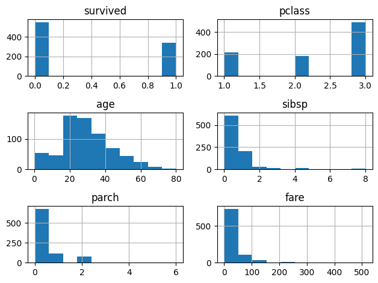

import pandas as pd
import seaborn as sns
import matplotlib.pyplot as plt
import numpy as np
from modules.generate_data import generate_survey_data, generate_duplicate_example【脱初心者】Pandasのおしゃな書き方を目指して
Python基礎
Pandas
Pandasの機能をもうちょっといい感じに使うために中級上級者になるため
# バージョンの確認
print(pd.__version__)3.0.0df = sns.load_dataset('titanic')
display(df.head())| survived | pclass | sex | age | sibsp | parch | fare | embarked | class | who | adult_male | deck | embark_town | alive | alone | |
|---|---|---|---|---|---|---|---|---|---|---|---|---|---|---|---|
| 0 | 0 | 3 | male | 22.0 | 1 | 0 | 7.2500 | S | Third | man | True | NaN | Southampton | no | False |
| 1 | 1 | 1 | female | 38.0 | 1 | 0 | 71.2833 | C | First | woman | False | C | Cherbourg | yes | False |
| 2 | 1 | 3 | female | 26.0 | 0 | 0 | 7.9250 | S | Third | woman | False | NaN | Southampton | yes | True |
| 3 | 1 | 1 | female | 35.0 | 1 | 0 | 53.1000 | S | First | woman | False | C | Southampton | yes | False |
| 4 | 0 | 3 | male | 35.0 | 0 | 0 | 8.0500 | S | Third | man | True | NaN | Southampton | no | True |
df_q = generate_survey_data(n=10)
display(df_q)| ユーザーID | 年齢 | 満足度 | 好きな食べ物 | |
|---|---|---|---|---|
| 0 | U001 | 45 | 3.0 | [ラーメン] |
| 1 | U002 | 29 | 5.0 | [カレー, サラダ, パスタ] |
| 2 | U003 | 34 | NaN | [ハンバーグ, カレー] |
| 3 | U004 | 33 | 5.0 | [サラダ, カレー, 寿司] |
| 4 | U005 | 22 | 4.0 | [サラダ, カレー, パスタ] |
| 5 | U006 | 31 | 4.0 | [サラダ, カレー, ハンバーグ] |
| 6 | U007 | 41 | NaN | [サラダ, 寿司, カレー] |
| 7 | U008 | 31 | 4.0 | [カレー, サラダ, パスタ] |
| 8 | U009 | 44 | 2.0 | [パスタ, 寿司] |
| 9 | U010 | 26 | 3.0 | [カレー] |
# user_idで結合する多対多になるデータを用意
df_user, df_order = generate_duplicate_example()
display(df_user)
display(df_order)| user_id | user_name | |
|---|---|---|
| 0 | 1 | 田中 |
| 1 | 2 | 佐藤_旧 |
| 2 | 2 | 佐藤_新 |
| 3 | 3 | 鈴木 |
| user_id | item | price | |
|---|---|---|---|
| 0 | 1 | リンゴ | 100 |
| 1 | 2 | バナナ | 200 |
| 2 | 2 | メロン | 300 |
| 3 | 4 | ブドウ | 400 |
data = {
"カテゴリ": [],
"コード": [],
"用途": [],
"使用データ": [],
}
def add_entry(category, code, purpose, used_data):
data["カテゴリ"].append(category)
data["コード"].append(code)
data["用途"].append(purpose)
data["使用データ"].append(used_data)データ読み込みと出力
add_entry(
category="読込",
code="pd.read_csv(path, chunksize=100, usecols=[...])",
purpose="大容量のCSVファイルをメモリを節約しながら読み込む",
used_data="titanic",
)
df_lst = []
chunks = pd.read_csv("./data/titanic.csv", chunksize=100, usecols=['survived', 'pclass', 'fare'])
for chunk in chunks:
optimized_chunk = chunk.convert_dtypes()
agged = optimized_chunk.groupby(['survived', 'pclass']).agg(
fare=('fare', 'sum'),
user=('fare', 'count')
).reset_index()
df_lst.append(agged)
df_final = pd.concat(df_lst, ignore_index=True)
agged = df_final.groupby(['survived', 'pclass']).agg(
fare=('fare', 'sum'),
user=('user', 'sum')
)
agged["mean_fare"] = agged["fare"] / agged["user"]
display(agged)| fare | user | mean_fare | ||
|---|---|---|---|---|
| survived | pclass | |||
| 0 | 1 | 5174.7206 | 80 | 64.684007 |
| 2 | 1882.9958 | 97 | 19.412328 | |
| 3 | 5085.0035 | 372 | 13.669364 | |
| 1 | 1 | 13002.6919 | 136 | 95.608029 |
| 2 | 1918.8459 | 87 | 22.0557 | |
| 3 | 1629.6916 | 119 | 13.694887 |
ちょっと蛇足化もしれないがメモリを節約することができる
# マークダウンで州つりょく
add_entry(
category="出力",
code="df.to_markdown('path')",
purpose="データをマークダウン形式で出力する",
used_data="titanic, survey, users, orders",
)
df.head(10).to_markdown("./data/titanic.md", index=False)
df_q.head(10).to_markdown("./data/survey.md", index=False)
df_user.head(10).to_markdown("./data/users.md", index=False)
df_order.head(10).to_markdown("./data/orders.md", index=False)
# df.to_csv("./data/titanic.csv", index=False)add_entry(
category="出力",
code="df.style.background_gradient(path)",
purpose="データをヒートマップで可視化する",
used_data="titanic",
)
# 簡単なヒートマップはpanadsだけで可能
agged.style.background_gradient(cmap='Blues', subset=['mean_fare'])| fare | user | mean_fare | ||
|---|---|---|---|---|
| survived | pclass | |||
| 0 | 1 | 5174.720600 | 80 | 64.684007 |
| 2 | 1882.995800 | 97 | 19.412328 | |
| 3 | 5085.003500 | 372 | 13.669364 | |
| 1 | 1 | 13002.691900 | 136 | 95.608029 |
| 2 | 1918.845900 | 87 | 22.055700 | |
| 3 | 1629.691600 | 119 | 13.694887 |
データ抽出
add_entry(
category="抽出",
code="df.nlargest(n=10, columns='fare')",
purpose="指定したカラムのデータを大きい順に抽出する",
used_data="titanic",
)
# 指定したカラムのデータを大きい順に抽出
df.nlargest(n=10, columns=['fare', "pclass"])| survived | pclass | sex | age | sibsp | parch | fare | embarked | class | who | adult_male | deck | embark_town | alive | alone | |
|---|---|---|---|---|---|---|---|---|---|---|---|---|---|---|---|
| 258 | 1 | 1 | female | 35.0 | 0 | 0 | 512.3292 | C | First | woman | False | NaN | Cherbourg | yes | True |
| 679 | 1 | 1 | male | 36.0 | 0 | 1 | 512.3292 | C | First | man | True | B | Cherbourg | yes | False |
| 737 | 1 | 1 | male | 35.0 | 0 | 0 | 512.3292 | C | First | man | True | B | Cherbourg | yes | True |
| 27 | 0 | 1 | male | 19.0 | 3 | 2 | 263.0000 | S | First | man | True | C | Southampton | no | False |
| 88 | 1 | 1 | female | 23.0 | 3 | 2 | 263.0000 | S | First | woman | False | C | Southampton | yes | False |
| 341 | 1 | 1 | female | 24.0 | 3 | 2 | 263.0000 | S | First | woman | False | C | Southampton | yes | False |
| 438 | 0 | 1 | male | 64.0 | 1 | 4 | 263.0000 | S | First | man | True | C | Southampton | no | False |
| 311 | 1 | 1 | female | 18.0 | 2 | 2 | 262.3750 | C | First | woman | False | B | Cherbourg | yes | False |
| 742 | 1 | 1 | female | 21.0 | 2 | 2 | 262.3750 | C | First | woman | False | B | Cherbourg | yes | False |
| 118 | 0 | 1 | male | 24.0 | 0 | 1 | 247.5208 | C | First | man | True | B | Cherbourg | no | False |
add_entry(
category="抽出",
code="df.nsmallest(n=10, columns='fare')",
purpose="指定したカラムのデータを小さい順に抽出する",
used_data="titanic",
)
# 小さい順に抽出
df.nsmallest(n=10, columns='fare')| survived | pclass | sex | age | sibsp | parch | fare | embarked | class | who | adult_male | deck | embark_town | alive | alone | |
|---|---|---|---|---|---|---|---|---|---|---|---|---|---|---|---|
| 179 | 0 | 3 | male | 36.0 | 0 | 0 | 0.0 | S | Third | man | True | NaN | Southampton | no | True |
| 263 | 0 | 1 | male | 40.0 | 0 | 0 | 0.0 | S | First | man | True | B | Southampton | no | True |
| 271 | 1 | 3 | male | 25.0 | 0 | 0 | 0.0 | S | Third | man | True | NaN | Southampton | yes | True |
| 277 | 0 | 2 | male | NaN | 0 | 0 | 0.0 | S | Second | man | True | NaN | Southampton | no | True |
| 302 | 0 | 3 | male | 19.0 | 0 | 0 | 0.0 | S | Third | man | True | NaN | Southampton | no | True |
| 413 | 0 | 2 | male | NaN | 0 | 0 | 0.0 | S | Second | man | True | NaN | Southampton | no | True |
| 466 | 0 | 2 | male | NaN | 0 | 0 | 0.0 | S | Second | man | True | NaN | Southampton | no | True |
| 481 | 0 | 2 | male | NaN | 0 | 0 | 0.0 | S | Second | man | True | NaN | Southampton | no | True |
| 597 | 0 | 3 | male | 49.0 | 0 | 0 | 0.0 | S | Third | man | True | NaN | Southampton | no | True |
| 633 | 0 | 1 | male | NaN | 0 | 0 | 0.0 | S | First | man | True | NaN | Southampton | no | True |
add_entry(
category="抽出",
code="df.select_dtypes(include='データタイプ')",
purpose="特定のデータ型のカラムのみを抽出する",
used_data="titanic",
)
# 型で抽出するデータを選べる
numbers = df.select_dtypes(include='number')
display(numbers.head())| survived | pclass | age | sibsp | parch | fare | |
|---|---|---|---|---|---|---|
| 0 | 0 | 3 | 22.0 | 1 | 0 | 7.2500 |
| 1 | 1 | 1 | 38.0 | 1 | 0 | 71.2833 |
| 2 | 1 | 3 | 26.0 | 0 | 0 | 7.9250 |
| 3 | 1 | 1 | 35.0 | 1 | 0 | 53.1000 |
| 4 | 0 | 3 | 35.0 | 0 | 0 | 8.0500 |
numbers.hist()
plt.tight_layout()
データ型
df.info()<class 'pandas.DataFrame'>
RangeIndex: 891 entries, 0 to 890
Data columns (total 15 columns):
# Column Non-Null Count Dtype
--- ------ -------------- -----
0 survived 891 non-null int64
1 pclass 891 non-null int64
2 sex 891 non-null str
3 age 714 non-null float64
4 sibsp 891 non-null int64
5 parch 891 non-null int64
6 fare 891 non-null float64
7 embarked 889 non-null str
8 class 891 non-null category
9 who 891 non-null str
10 adult_male 891 non-null bool
11 deck 203 non-null category
12 embark_town 889 non-null str
13 alive 891 non-null str
14 alone 891 non-null bool
dtypes: bool(2), category(2), float64(2), int64(4), str(5)
memory usage: 80.7 KBadd_entry(
category="データ型",
code="convert_dtypes()",
purpose="データ型を柔軟に変換する",
used_data="titanic",
)
# 柔軟な型に変換してくれる
df.convert_dtypes().info()<class 'pandas.DataFrame'>
RangeIndex: 891 entries, 0 to 890
Data columns (total 15 columns):
# Column Non-Null Count Dtype
--- ------ -------------- -----
0 survived 891 non-null Int64
1 pclass 891 non-null Int64
2 sex 891 non-null string
3 age 714 non-null Float64
4 sibsp 891 non-null Int64
5 parch 891 non-null Int64
6 fare 891 non-null Float64
7 embarked 889 non-null string
8 class 891 non-null category
9 who 891 non-null string
10 adult_male 891 non-null boolean
11 deck 203 non-null category
12 embark_town 889 non-null string
13 alive 891 non-null string
14 alone 891 non-null boolean
dtypes: Float64(2), Int64(4), boolean(2), category(2), string(5)
memory usage: 87.6 KB# 特定の型を変換しないように指定も可能
df.convert_dtypes(
convert_integer=False,
convert_boolean=False,
convert_floating=False,
convert_string=True,
).info()<class 'pandas.DataFrame'>
RangeIndex: 891 entries, 0 to 890
Data columns (total 15 columns):
# Column Non-Null Count Dtype
--- ------ -------------- -----
0 survived 891 non-null int64
1 pclass 891 non-null int64
2 sex 891 non-null string
3 age 714 non-null float64
4 sibsp 891 non-null int64
5 parch 891 non-null int64
6 fare 891 non-null float64
7 embarked 889 non-null string
8 class 891 non-null category
9 who 891 non-null string
10 adult_male 891 non-null bool
11 deck 203 non-null category
12 embark_town 889 non-null string
13 alive 891 non-null string
14 alone 891 non-null bool
dtypes: bool(2), category(2), float64(2), int64(4), string(5)
memory usage: 80.7 KB整形
# 年齢をビン分割してカテゴリ変数に変換
add_entry(
category="整形",
code="pd.cut(Series, bins=[], labels=[])",
purpose="範囲を指定して数値データをカテゴリ変数に変換する",
used_data="titanic",
)
df["age_group"] = pd.cut(
df["age"],
bins=[0, 12, 20, 40, 60, 80, np.inf],
labels=["child", "teen", "adult", "middle_aged", "senior", "elderly"],
)
df[["age", "age_group"]].head(10)| age | age_group | |
|---|---|---|
| 0 | 22.0 | adult |
| 1 | 38.0 | adult |
| 2 | 26.0 | adult |
| 3 | 35.0 | adult |
| 4 | 35.0 | adult |
| 5 | NaN | NaN |
| 6 | 54.0 | middle_aged |
| 7 | 2.0 | child |
| 8 | 27.0 | adult |
| 9 | 14.0 | teen |
df.query("0 <= age <= 12")["age_group"].unique()['child']
Categories (6, str): ['child' < 'teen' < 'adult' < 'middle_aged' < 'senior' < 'elderly']カテゴリ変数となり順序の大小が確保される
add_entry(
category="整形",
code="pd.qcut(Series, q=4, labels=[])",
purpose="分割数を決めて数値データをカテゴリ変数に変換する",
used_data="titanic",
)
# 料金を4分割してカテゴリ変数に変換
df["fare_rank"] = pd.qcut(df["fare"], q=4, labels=["low", "medium", "high", "very_high"])
df[["fare", "fare_rank"]]| fare | fare_rank | |
|---|---|---|
| 0 | 7.2500 | low |
| 1 | 71.2833 | very_high |
| 2 | 7.9250 | medium |
| 3 | 53.1000 | very_high |
| 4 | 8.0500 | medium |
| ... | ... | ... |
| 886 | 13.0000 | medium |
| 887 | 30.0000 | high |
| 888 | 23.4500 | high |
| 889 | 30.0000 | high |
| 890 | 7.7500 | low |
891 rows × 2 columns
df_q| ユーザーID | 年齢 | 満足度 | 好きな食べ物 | |
|---|---|---|---|---|
| 0 | U001 | 45 | 3.0 | [ラーメン] |
| 1 | U002 | 29 | 5.0 | [カレー, サラダ, パスタ] |
| 2 | U003 | 34 | NaN | [ハンバーグ, カレー] |
| 3 | U004 | 33 | 5.0 | [サラダ, カレー, 寿司] |
| 4 | U005 | 22 | 4.0 | [サラダ, カレー, パスタ] |
| 5 | U006 | 31 | 4.0 | [サラダ, カレー, ハンバーグ] |
| 6 | U007 | 41 | NaN | [サラダ, 寿司, カレー] |
| 7 | U008 | 31 | 4.0 | [カレー, サラダ, パスタ] |
| 8 | U009 | 44 | 2.0 | [パスタ, 寿司] |
| 9 | U010 | 26 | 3.0 | [カレー] |
add_entry(
category="整形",
code="df.explode(column_name)",
purpose="リスト型のデータを展開して縦長にする",
used_data="survey",
)
# explodeメソッドでリストを展開
df_q_exploded = df_q.explode(["好きな食べ物"]).reset_index(drop=True)
df_q_exploded| ユーザーID | 年齢 | 満足度 | 好きな食べ物 | |
|---|---|---|---|---|
| 0 | U001 | 45 | 3.0 | ラーメン |
| 1 | U002 | 29 | 5.0 | カレー |
| 2 | U002 | 29 | 5.0 | サラダ |
| 3 | U002 | 29 | 5.0 | パスタ |
| 4 | U003 | 34 | NaN | ハンバーグ |
| 5 | U003 | 34 | NaN | カレー |
| 6 | U004 | 33 | 5.0 | サラダ |
| 7 | U004 | 33 | 5.0 | カレー |
| 8 | U004 | 33 | 5.0 | 寿司 |
| 9 | U005 | 22 | 4.0 | サラダ |
| 10 | U005 | 22 | 4.0 | カレー |
| 11 | U005 | 22 | 4.0 | パスタ |
| 12 | U006 | 31 | 4.0 | サラダ |
| 13 | U006 | 31 | 4.0 | カレー |
| 14 | U006 | 31 | 4.0 | ハンバーグ |
| 15 | U007 | 41 | NaN | サラダ |
| 16 | U007 | 41 | NaN | 寿司 |
| 17 | U007 | 41 | NaN | カレー |
| 18 | U008 | 31 | 4.0 | カレー |
| 19 | U008 | 31 | 4.0 | サラダ |
| 20 | U008 | 31 | 4.0 | パスタ |
| 21 | U009 | 44 | 2.0 | パスタ |
| 22 | U009 | 44 | 2.0 | 寿司 |
| 23 | U010 | 26 | 3.0 | カレー |
複数列の同時展開はリスト内の要素数が同じじゃないとできない。
ついでにstack, unstack, meltも見てみる
- stackは横長のデータを縦長に積み上げる(インデックスが設定されている)
- meltも横長のデータを縦長に積み上げる(特定の列を指定して固定し、そのほかを縦に変換)
- unstackは縦長のデータを横長にする
- pivotは列の値を新しい列名にする（重複無し）
- pivot_tableはpivotに集計をプラスする
add_entry(
category="整形",
code="df.explode(column_name)",
purpose="リスト型のデータを展開して縦長にする",
used_data="titanic",
)
df_single_columns = df[["embark_town", "fare"]]
df_single_columns.stack(level=-1).reset_index().head(10)| level_0 | level_1 | 0 | |
|---|---|---|---|
| 0 | 0 | embark_town | Southampton |
| 1 | 0 | fare | 7.25 |
| 2 | 1 | embark_town | Cherbourg |
| 3 | 1 | fare | 71.2833 |
| 4 | 2 | embark_town | Southampton |
| 5 | 2 | fare | 7.925 |
| 6 | 3 | embark_town | Southampton |
| 7 | 3 | fare | 53.1 |
| 8 | 4 | embark_town | Southampton |
| 9 | 4 | fare | 8.05 |
agged = (
df.groupby(["class"])
.agg(
average_fare=pd.NamedAgg(column="fare", aggfunc="mean"),
max_fare=pd.NamedAgg(column="fare", aggfunc="max"),
min_fare=pd.NamedAgg(column="fare", aggfunc="min"),
avg_age=pd.NamedAgg(column="age", aggfunc="mean"),
sruvived_rate=pd.NamedAgg(column="survived", aggfunc="mean"),
)
)
agged| average_fare | max_fare | min_fare | avg_age | sruvived_rate | |
|---|---|---|---|---|---|
| class | |||||
| First | 84.154687 | 512.3292 | 0.0 | 38.233441 | 0.629630 |
| Second | 20.662183 | 73.5000 | 0.0 | 29.877630 | 0.472826 |
| Third | 13.675550 | 69.5500 | 0.0 | 25.140620 | 0.242363 |
stack_se = agged.stack(level=0)
stack_seclass
First average_fare 84.154687
max_fare 512.329200
min_fare 0.000000
avg_age 38.233441
sruvived_rate 0.629630
Second average_fare 20.662183
max_fare 73.500000
min_fare 0.000000
avg_age 29.877630
sruvived_rate 0.472826
Third average_fare 13.675550
max_fare 69.550000
min_fare 0.000000
avg_age 25.140620
sruvived_rate 0.242363
dtype: float64stack_se.reset_index()| class | level_1 | 0 | |
|---|---|---|---|
| 0 | First | average_fare | 84.154687 |
| 1 | First | max_fare | 512.329200 |
| 2 | First | min_fare | 0.000000 |
| 3 | First | avg_age | 38.233441 |
| 4 | First | sruvived_rate | 0.629630 |
| 5 | Second | average_fare | 20.662183 |
| 6 | Second | max_fare | 73.500000 |
| 7 | Second | min_fare | 0.000000 |
| 8 | Second | avg_age | 29.877630 |
| 9 | Second | sruvived_rate | 0.472826 |
| 10 | Third | average_fare | 13.675550 |
| 11 | Third | max_fare | 69.550000 |
| 12 | Third | min_fare | 0.000000 |
| 13 | Third | avg_age | 25.140620 |
| 14 | Third | sruvived_rate | 0.242363 |
横長になった集計値を確認するにはちょうどよさそう。
stack_se.indexMultiIndex([( 'First', 'average_fare'),
( 'First', 'max_fare'),
( 'First', 'min_fare'),
( 'First', 'avg_age'),
( 'First', 'sruvived_rate'),
('Second', 'average_fare'),
('Second', 'max_fare'),
('Second', 'min_fare'),
('Second', 'avg_age'),
('Second', 'sruvived_rate'),
( 'Third', 'average_fare'),
( 'Third', 'max_fare'),
( 'Third', 'min_fare'),
( 'Third', 'avg_age'),
( 'Third', 'sruvived_rate')],
names=['class', None])# stackで積み上げられたものはunstackで元に戻せる
unstacked = stack_se.unstack(level=1)
unstacked| average_fare | max_fare | min_fare | avg_age | sruvived_rate | |
|---|---|---|---|---|---|
| class | |||||
| First | 84.154687 | 512.3292 | 0.0 | 38.233441 | 0.629630 |
| Second | 20.662183 | 73.5000 | 0.0 | 29.877630 | 0.472826 |
| Third | 13.675550 | 69.5500 | 0.0 | 25.140620 | 0.242363 |
add_entry(
category="整形",
code="df.melt(id_vars=[], var_name='', value_name='')",
purpose="データを横長から縦長に変換する",
used_data="titanic",
)
# meltメソッドで縦に長いデータに変換
df_agged = agged.reset_index()
df_agged.melt(id_vars=["class"], var_name="指標", value_name="値")| class | 指標 | 値 | |
|---|---|---|---|
| 0 | First | average_fare | 84.154687 |
| 1 | Second | average_fare | 20.662183 |
| 2 | Third | average_fare | 13.675550 |
| 3 | First | max_fare | 512.329200 |
| 4 | Second | max_fare | 73.500000 |
| 5 | Third | max_fare | 69.550000 |
| 6 | First | min_fare | 0.000000 |
| 7 | Second | min_fare | 0.000000 |
| 8 | Third | min_fare | 0.000000 |
| 9 | First | avg_age | 38.233441 |
| 10 | Second | avg_age | 29.877630 |
| 11 | Third | avg_age | 25.140620 |
| 12 | First | sruvived_rate | 0.629630 |
| 13 | Second | sruvived_rate | 0.472826 |
| 14 | Third | sruvived_rate | 0.242363 |
結合の安全性
display(df_user)
display(df_order)| user_id | user_name | |
|---|---|---|
| 0 | 1 | 田中 |
| 1 | 2 | 佐藤_旧 |
| 2 | 2 | 佐藤_新 |
| 3 | 3 | 鈴木 |
| user_id | item | price | |
|---|---|---|---|
| 0 | 1 | リンゴ | 100 |
| 1 | 2 | バナナ | 200 |
| 2 | 2 | メロン | 300 |
| 3 | 4 | ブドウ | 400 |
# 普通にマージすると気づかずしてしまう。
df_merged = pd.merge(df_user, df_order, on='user_id', how='inner')
display(df_merged)| user_id | user_name | item | price | |
|---|---|---|---|---|
| 0 | 1 | 田中 | リンゴ | 100 |
| 1 | 2 | 佐藤_旧 | バナナ | 200 |
| 2 | 2 | 佐藤_旧 | メロン | 300 |
| 3 | 2 | 佐藤_新 | バナナ | 200 |
| 4 | 2 | 佐藤_新 | メロン | 300 |
add_entry(
category="結合",
code="df.merge(other_df, on='column_name', how='inner', validate='one_to_many')",
purpose="結合前にデータの関係性を検証する",
used_data="users, orders",
)
df_merged = pd.merge(
df_user,
df_order,
on='user_id',
how='inner',
validate='one_to_many' # これを追加
)
display(df_merged)--------------------------------------------------------------------------- MergeError Traceback (most recent call last) Cell In[62], line 8 1 add_entry( 2 category="結合", 3 code="df.merge(other_df, on='column_name', how='inner', validate='one_to_many')", 4 purpose="結合前にデータの関係性を検証する", 5 used_data="users, orders", 6 ) ----> 8 df_merged = pd.merge( 9 df_user, 10 df_order, 11 on='user_id', 12 how='inner', 13 validate='one_to_many' # これを追加 14 ) 15 display(df_merged) File d:\data-analysis\.venv\Lib\site-packages\pandas\core\reshape\merge.py:385, in merge(left, right, how, on, left_on, right_on, left_index, right_index, sort, suffixes, copy, indicator, validate) 371 return _cross_merge( 372 left_df, 373 right_df, (...) 382 validate=validate, 383 ) 384 else: --> 385 op = _MergeOperation( 386 left_df, 387 right_df, 388 how=how, 389 on=on, 390 left_on=left_on, 391 right_on=right_on, 392 left_index=left_index, 393 right_index=right_index, 394 sort=sort, 395 suffixes=suffixes, 396 indicator=indicator, 397 validate=validate, 398 ) 399 return op.get_result() File d:\data-analysis\.venv\Lib\site-packages\pandas\core\reshape\merge.py:1037, in _MergeOperation.__init__(self, left, right, how, on, left_on, right_on, left_index, right_index, sort, suffixes, indicator, validate) 1033 # If argument passed to validate, 1034 # check if columns specified as unique 1035 # are in fact unique. 1036 if validate is not None: -> 1037 self._validate_validate_kwd(validate) File d:\data-analysis\.venv\Lib\site-packages\pandas\core\reshape\merge.py:2012, in _MergeOperation._validate_validate_kwd(self, validate) 2010 elif validate in ["one_to_many", "1:m"]: 2011 if not left_unique: -> 2012 raise MergeError( 2013 "Merge keys are not unique in left dataset; not a one-to-many merge" 2014 f"{left_error_msg(left_join_index)}" 2015 ) 2017 elif validate in ["many_to_one", "m:1"]: 2018 if not right_unique: MergeError: Merge keys are not unique in left dataset; not a one-to-many merge Duplicates in left: user_id 2 ...
エラーをはいてくれるので結合前に対策ができる
チェーンメソッド
df = sns.load_dataset('titanic')
df| survived | pclass | sex | age | sibsp | parch | fare | embarked | class | who | adult_male | deck | embark_town | alive | alone | |
|---|---|---|---|---|---|---|---|---|---|---|---|---|---|---|---|
| 0 | 0 | 3 | male | 22.0 | 1 | 0 | 7.2500 | S | Third | man | True | NaN | Southampton | no | False |
| 1 | 1 | 1 | female | 38.0 | 1 | 0 | 71.2833 | C | First | woman | False | C | Cherbourg | yes | False |
| 2 | 1 | 3 | female | 26.0 | 0 | 0 | 7.9250 | S | Third | woman | False | NaN | Southampton | yes | True |
| 3 | 1 | 1 | female | 35.0 | 1 | 0 | 53.1000 | S | First | woman | False | C | Southampton | yes | False |
| 4 | 0 | 3 | male | 35.0 | 0 | 0 | 8.0500 | S | Third | man | True | NaN | Southampton | no | True |
| ... | ... | ... | ... | ... | ... | ... | ... | ... | ... | ... | ... | ... | ... | ... | ... |
| 886 | 0 | 2 | male | 27.0 | 0 | 0 | 13.0000 | S | Second | man | True | NaN | Southampton | no | True |
| 887 | 1 | 1 | female | 19.0 | 0 | 0 | 30.0000 | S | First | woman | False | B | Southampton | yes | True |
| 888 | 0 | 3 | female | NaN | 1 | 2 | 23.4500 | S | Third | woman | False | NaN | Southampton | no | False |
| 889 | 1 | 1 | male | 26.0 | 0 | 0 | 30.0000 | C | First | man | True | C | Cherbourg | yes | True |
| 890 | 0 | 3 | male | 32.0 | 0 | 0 | 7.7500 | Q | Third | man | True | NaN | Queenstown | no | True |
891 rows × 15 columns
# こんな感じのやつ
df_preprocessed = (
df[["survived", "pclass", "age", "fare"]]
.dropna(subset=['age', 'fare'])
.convert_dtypes()
)
df_preprocessed| survived | pclass | age | fare | |
|---|---|---|---|---|
| 0 | 0 | 3 | 22.0 | 7.25 |
| 1 | 1 | 1 | 38.0 | 71.2833 |
| 2 | 1 | 3 | 26.0 | 7.925 |
| 3 | 1 | 1 | 35.0 | 53.1 |
| 4 | 0 | 3 | 35.0 | 8.05 |
| ... | ... | ... | ... | ... |
| 885 | 0 | 3 | 39.0 | 29.125 |
| 886 | 0 | 2 | 27.0 | 13.0 |
| 887 | 1 | 1 | 19.0 | 30.0 |
| 889 | 1 | 1 | 26.0 | 30.0 |
| 890 | 0 | 3 | 32.0 | 7.75 |
714 rows × 4 columns
assignとpipを使えば複雑なものもチェーンメソッドに書ける
def add_tax(df, tax_rate=0.1):
df_copy = df.copy()
df_copy['fare_with_tax'] = df_copy['fare'] * (1 + tax_rate)
return df_copy
def hoge(df):
return 1add_entry(
category="チェーンメソッド",
code="df.assign(...)",
purpose="チェーンメソッドで新しい列を追加する",
used_data="titanic",
)
add_entry(
category="チェーンメソッド",
code="df.pipe(...)",
purpose="チェーンメソッドで関数を適用する",
used_data="titanic",
)
df_preprocessed = (
df[["survived", "pclass", "age", "fare"]]
.dropna(subset=['age', 'fare'])
.convert_dtypes()
.assign(age_group=lambda x: pd.cut(x["age"], bins=[0, 12, 20, 40, 60, 80], labels=["child", "teen", "adult", "middle_aged", "senior"]))
.pipe(add_tax, tax_rate=0.1)
)
df_preprocessed| survived | pclass | age | fare | age_group | fare_with_tax | |
|---|---|---|---|---|---|---|
| 0 | 0 | 3 | 22.0 | 7.25 | adult | 7.975 |
| 1 | 1 | 1 | 38.0 | 71.2833 | adult | 78.41163 |
| 2 | 1 | 3 | 26.0 | 7.925 | adult | 8.7175 |
| 3 | 1 | 1 | 35.0 | 53.1 | adult | 58.41 |
| 4 | 0 | 3 | 35.0 | 8.05 | adult | 8.855 |
| ... | ... | ... | ... | ... | ... | ... |
| 885 | 0 | 3 | 39.0 | 29.125 | adult | 32.0375 |
| 886 | 0 | 2 | 27.0 | 13.0 | adult | 14.3 |
| 887 | 1 | 1 | 19.0 | 30.0 | teen | 33.0 |
| 889 | 1 | 1 | 26.0 | 30.0 | adult | 33.0 |
| 890 | 0 | 3 | 32.0 | 7.75 | adult | 8.525 |
714 rows × 6 columns
# Pandas3.0からこうも書ける
tax_logic = pd.col("fare_with_tax") - pd.col("fare") # 計算ロジックを定義
df_preprocessed = (
df[["survived", "pclass", "age", "fare"]]
.dropna(subset=['age', 'fare'])
.convert_dtypes()
.assign(age_group=lambda x: pd.cut(x["age"], bins=[0, 12, 20, 40, 60, 80], labels=["child", "teen", "adult", "middle_aged", "senior"]))
.pipe(add_tax, tax_rate=0.1)
.assign(tax=tax_logic) # assign内でチェーンメソッドとして書ける
)
df_preprocessed| survived | pclass | age | fare | age_group | fare_with_tax | tax | |
|---|---|---|---|---|---|---|---|
| 0 | 0 | 3 | 22.0 | 7.25 | adult | 7.975 | 0.725 |
| 1 | 1 | 1 | 38.0 | 71.2833 | adult | 78.41163 | 7.12833 |
| 2 | 1 | 3 | 26.0 | 7.925 | adult | 8.7175 | 0.7925 |
| 3 | 1 | 1 | 35.0 | 53.1 | adult | 58.41 | 5.31 |
| 4 | 0 | 3 | 35.0 | 8.05 | adult | 8.855 | 0.805 |
| ... | ... | ... | ... | ... | ... | ... | ... |
| 885 | 0 | 3 | 39.0 | 29.125 | adult | 32.0375 | 2.9125 |
| 886 | 0 | 2 | 27.0 | 13.0 | adult | 14.3 | 1.3 |
| 887 | 1 | 1 | 19.0 | 30.0 | teen | 33.0 | 3.0 |
| 889 | 1 | 1 | 26.0 | 30.0 | adult | 33.0 | 3.0 |
| 890 | 0 | 3 | 32.0 | 7.75 | adult | 8.525 | 0.775 |
714 rows × 7 columns